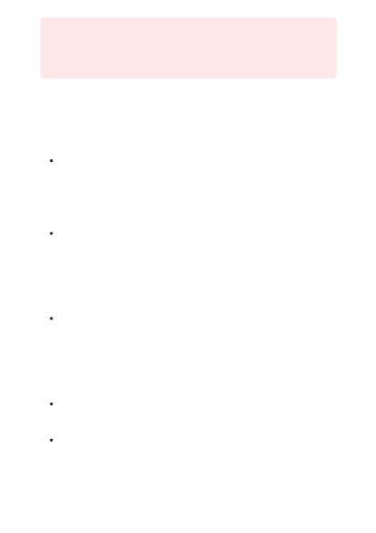

Large-scale natural language and image models trained with such data can potentially
behave in ways that are unfair, unreliable, or offensive, in turn causing harms. Some of
the ways are listed here. We emphasize that these types of harms aren't mutually
exclusive. A single model can exhibit more than one type of harm, potentially relating to
multiple different groups of people. For example:
Allocation: These models can be used in ways that lead to unfair allocation of
resources or opportunities. For example, automated resume screening systems can
withhold employment opportunities from one gender if they're trained on resume
data that reflects the existing gender imbalance in a particular industry. Or the
DALL·E 2 model could be used to create imagery in the style of a known artist,
which could affect the value of the artist's work or the artist's life opportunities.
Quality of service: The Azure OpenAI models are trained primarily on English text
and images with English text descriptions. Languages other than English will
experience worse performance. English language varieties with less representation
in the training data might experience worse performance. The publicly available
images used to train the DALL·E models might reinforce public bias and other
undesirable content. The models are also unable to generate consistent
photorealistic images and comprehensive text at this time.
Stereotyping: These models can reinforce stereotypes. For example, when
translating "He is a nurse" and "She is a doctor" into a genderless language such as
Turkish and then back into English, many machine translation systems yield the
stereotypical (and incorrect) results of "She is a nurse" and "He is a doctor." With
DALL·E 2, when generating an image based on the prompt "Fatherless children,"
the model could generate images of Black children only, reinforcing harmful
stereotypes that may exist in publicly available images.
Demeaning: These models can demean people. For example, an open-ended
content generation system with inappropriate or insufficient mitigations might
produce offensive or demeaning to a particular group of people.
Overrepresentation and underrepresentation: These models can over- or under-
represent groups of people, or even erase their representation entirely. For
example, if text prompts that contain the word "gay" are detected as potentially
harmful or offensive, this could to the underrepresentation or even erasure of
legitimate image generations by or about the LGBTQIA+ community.
Ｕ
Caution
Please be advised that this section contains illustrative examples which include
terms and language that some individuals may find offensive.